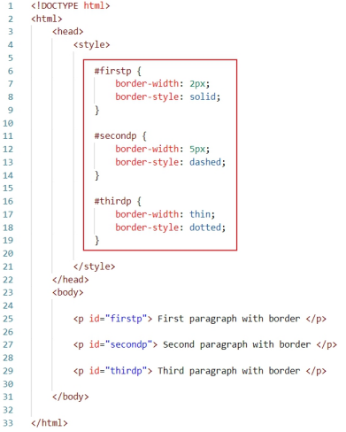

So as mentioned above, by default, there is not border for HTML elements.
The "border-width" property is used to define the width of the border.
Its value can be in px, cm, pt, em, or the three pre-defined values: thin, thick,
or medium. Along with border-width, we also need to define the style of
the border using the "border-style" property. The "border-style" property
can have values such as solid, dotted, and dashed.
First paragraph with border.
First paragraph with border.
Second paragraph with border.
Third paragraph with border.
By default, the color of the border is black. But it can be changed using the
"border-color" property.
First paragraph with border.